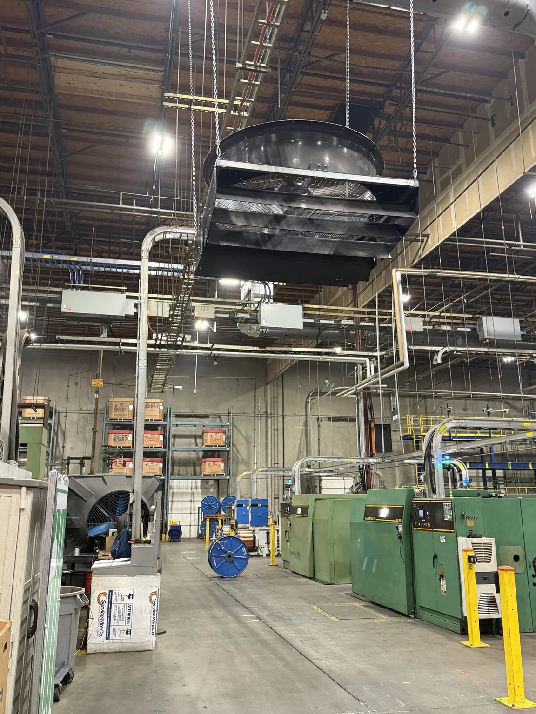

Racks make long aisles that an overhead fan can't reach well, and a mezzanine leaves little room above. That's where VividAir pitches the TAZ directional fan, in 36-inch and 72-inch sizes [1]. Before you pick a spot for one, trace where the air will go and what's going to get in its way.
The two Big Fan Guys installation photos with this guide show a 72-inch TAZ: cylindrical housing, protective guard, discharge louvers and chain suspension. On your own job, read the nameplate to confirm the exact model before you lean on any published numbers.

Read the coverage claim closely
VividAir advertises up to 135 feet of linear cooling coverage and up to 75,200 CFM for the TAZ family [1]. Those are the manufacturer's numbers, and we haven't tested them. The family comes in two sizes, so find out which size and conditions those figures belong to before you put them in a proposal.
For an aisle, the real question is what air speed reaches the work positions down its length. A linear coverage number doesn't answer that. It also isn't the same thing as the round coverage area of an overhead HVLS fan.
VividAir says the TAZ can mount flat or angled and blow one way or in several directions [1]. Get the racking, mezzanines and other obstructions on the layout drawing before you set the fan's position and angle.
The install guide doesn't agree with itself
The product page links a January 2023 document as the 72-inch Installation and Technical Operations Guide, next to a separate 36-inch guide [1][2]. Inside, the PDF uses "7ft TAZ Fan" headings, while its power requirements list GFY-TAZ-72-480 and GFY-TAZ-72-240 [2, printed p. 13].
Ask VividAir to sort that out against the unit you're installing. It doesn't mean the fan is really 84 inches, and it doesn't mean every drawing in the guide fits your unit. Keep the nameplate data and the drawings that shipped with the fan in the job file, and get the mismatch answered before you install or service off that guide.
The guide also says the contractor and customer should go over the layout, controller locations and supply panels before unloading, and check the mounting method at each spot [2]. Do that on the site survey, while there's still time to change things before the crew and equipment show up.
Leave room to hang it and to work on it
Fitting the housing in the aisle is only part of it. Check the structure, the specified mounting hardware and fasteners, the clearances, and whether the crew can get to it for assembly. Use the mounting details for the TAZ setup you bought. Hardware or methods from another fan line need their own check.
The photos show why service access belongs on the drawing. Somebody will need to reach that guard and those louvers later. A clear discharge path doesn't mean the unit can be serviced safely, so check access against the maintenance instructions.
Match the controls to the fan
Before you troubleshoot, write down the fan model, supply voltage, motor, drive and controller, plus any tie-in to the building controls or fire alarm. Then match that gear to the wiring and operations documents that came with it.
A plant with several generations of Go Fan Yourself or VividAir fans may have different controllers and wiring under the same product names. A 2023 manual helps you identify the equipment. It doesn't prove a newer unit uses the same hardware or wiring.
Before you mobilize, lock down the size, discharge direction, mounting setup and controls paperwork. If you're the buyer, get the coverage claim tied to your actual configuration and work area. The guide's conflicting size labels are still a question for VividAir.
Sources
[1] VividAir, TAZ product page, including current product literature and model-specific guide links: https://vividairmovement.com/product/taz/
[2] VividAir / Go Fan Yourself, TAZ Fan Installation & Technical Operations Guide, January 2023; linked as 72-inch on the product page, with conflicting 7ft headings in the document: https://vividairmovement.com/wp-content/uploads/2023/01/TAZ_Installation_and_Technical_Operations_Guide_1.2023.pdf